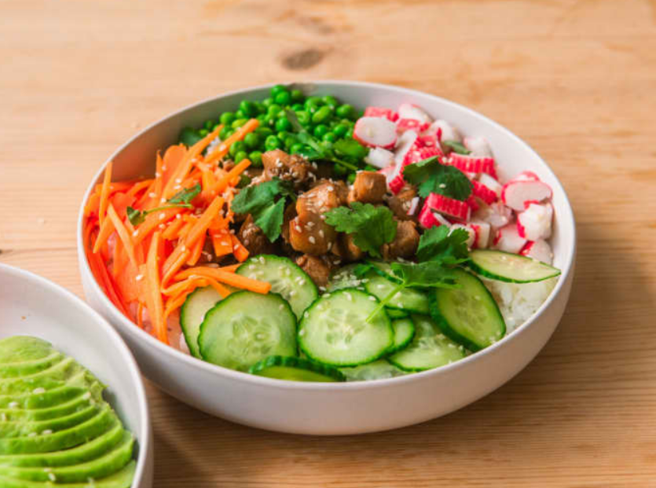

Chicken Poke Bowl

I love Poke Bowls so much. But, whenever I go
to a restaurant and get them, I end up paying up
to $20 for my order, which is ridiculous. Well,
this poke-inspired chicken bowl is just what I need.
Ingredients
- 125g Sushi Rice (uncooked)
- 3 Surimi Sticks
- 2 Carrots (medium)
- 1 Cup White Vinegar
- 1/4th English Cucumber
- 1 Cup Frozen Peas
- 1 Cup Water
- Salt (to taste)
For the Chicken
- 150g Raw Chicken Breast
- 2tsp Mirin
- 1 Green Onion (chopped)
- 2tbsp Soy Sauce
- 1/2tsp Sesame Oil
- 2 Garlic Cloves
Instructions / Steps
- Dice the chicken breast into bite-sized cubes.
- In a container, add the chicken, along with the Ingredients
for the marinade: soy sauce, mirin/rice vinegar, sesame oil,
green onion, and garlic. Mix until the chicken is thoroughly
coated, and let marinate in the fridge for at least 30 minutes,
sealed.
- Cook the chicken on medium heat until tender, and fully cooked.
Be careful not to burn the soy sauce.
- Follow the package instructions to cook the rice in a pot, or
just use a rice cooker to get it perfect effortlessly. (please just
buy a rice cooker)
- Season cooked rice with rice vinegar, and a pinch of salt. The rice
is now ready to use.
- Thinly slice your carrots into even batons. Place them in a sealable jar,
and top with a mixture of equal parts water, and vinegar, along with salt
to taste. These can be refrigerated until use.
- Slice your cucumber into even pieces. Set aside until use
- Cook your peas on medium heat in a pan until they appear bright green
and slightly softened. Don't overcooked them!
- Lay out a bed of rice in a bowl
- Add all of your ingredients on top of your rice, dividing them into
separate parts. Optionally you can top with cilantro, sesame seeds, and
green onion.